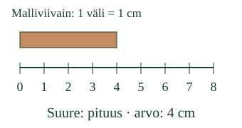
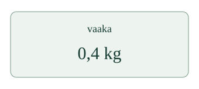

<link rel="stylesheet" href="lesson.css">


<section data-teaching-step="1" data-lesson-role="teaching-step">
<p class="lesson-intro"> Mitä saat selville mittaamalla?</p>
<h2>Suure on mitattava ominaisuus</h2><p><strong>Tunnistan, mitä ominaisuutta mitataan.</strong> Pituus ja massa ovat fysikaalisia suureita. Niiden arvo kuvaa ominaisuuden suuruutta.</p>
</section>


<section data-teaching-step="2" data-lesson-role="teaching-step">
<h3>Ominaisuus ja arvo</h3><p>Nauhan pituus on 4 cm. Suure on <strong>pituus</strong>; 4 cm ilmaisee sen arvon. Mittanauha on mittaväline.</p>
<figure data-lesson-role="worked-example"></figure>
<p>Vaa’an annettu mallilukema on 0,4 kg. Nyt mitataan <strong>massaa</strong>. Kilogramma on yksikkö, ei mitattava ominaisuus. Näissä esimerkeissä arvo ilmaistaan luvulla ja yksiköllä.</p>
</section>


<section data-teaching-step="3" data-lesson-role="teaching-step">
<figure data-lesson-role="worked-example"></figure>
</section>


<section data-teaching-step="4" data-lesson-role="teaching-step">
<div data-quantity-lab><p>Ilman harjoitusta: nimeä yllä olevista tilanteista mitattava ominaisuus. Tutki eri pituisia nauhoja: arvo voi vaihtua, vaikka mitattava ominaisuus on yhä pituus.</p></div>
</section>


<section data-teaching-step="5" data-lesson-role="teaching-step">
<h3>Pelkkä numero ei riitä</h3><p>Paidassa oleva 7 voi olla pelaajan tunnus. Se ei yksin kerro minkään mitatun ominaisuuden suuruutta. <strong>Mieti:</strong> mitä tietoa tarvitset, jotta tiedät, mitä luku tarkoittaa?</p>
<details data-lesson-role="hint"><summary>Apua ja korjattava ajatus</summary><p>Kysy ensin: mitä ominaisuutta tilanteessa tutkittiin? Väline auttaa mittaamaan ominaisuutta. Ilmaisussa 0,4 kg suure on massa, ei pelkkä luku0,4 tai väline vaaka.</p></details>
</section>


<section data-teaching-step="6" data-lesson-role="teaching-step">
<details data-lesson-role="teaching-step"><summary>Tutki lisää</summary><p>Muuta mallin nauhan pituutta. Mikä pysyy samana, kun arvo muuttuu? Kokeile sitten lämpötilan tai keston annettua mittausmerkintää. Laitteesi ei tee näitä mittauksia.</p><p>Kaikkien suureiden yksikköä ei aina kirjoiteta näkyviin: esimerkiksi taitekertoimen arvo voi olla1,32. Tämän tehtävän pituus-, massa-, lämpötila- ja kestoesimerkeissä yksikkö näkyy.</p></details>
</section>


<details data-lesson-role="teacher-note"><summary>Opettajalle ja mittaaminen käytännössä</summary><p>Vuosiluokat7–9. Vaadittu M-MEAS-01, M-NUM-14 vahvana tukena. Esimerkeissä lukuarvot ja yksiköt on annettu, eikä desimaalilaskua, yksikkömuunnoksia tai tiettyjen välineiden käyttötaitoa vaadita. Tämä käsite on erotettu PHY79-QTY-01-integraatiosta; osien tunnistaminen tässä ei anna myöhempien prosessien hallintaa.</p><p>VIM määrittelee suureen ominaisuudeksi, jonka suuruus voidaan ilmaista luvun ja vertailun avulla. Vertailu voi olla yksikkö tai muu määritelty referenssi; kaikki suureet eivät edellytä näkyvää yksikkömerkkiä. Mielipide ja tunnus eivät tämän tekstin perusteella ole kyseisen kappaleen fysikaalisia mittaustuloksia.</p><p>Lite-esimerkin yleistä väitettä “väri ei ole suure, koska nämä neljä mittaria eivät mittaa sitä” ei toisteta. Värin nimi on luokittelutieto; valon ominaisuuksia ja väriä luonnehtivia suureita voidaan mitata. Muodostakin voidaan mitata pituuksia tai kulmia. Välineen sopimattomuus ei osoita, ettei mitattavaa ominaisuutta olisi.</p><p>Kaikki lukemat ja viivaimen mittakaava ovat annettuja malleja. Ruutukuvan senttimetrit eivät ole fyysisiä senttimetrejä. Oikean mittauksen menetelmä, nollaus, tarkkuus ja epävarmuus tutkitaan erikseen turvallisilla välineillä. Ei henkilökohtaista historiaa, puheen vahvistuspakkoa, formaalia hallintaa, ihmiskatselmuksen tai oppimisvaikutuksen väitettä.</p></details>


<section data-teaching-step="7" data-lesson-role="teaching-step">
<p data-lesson-role="question"><strong>Lopuksi:</strong> jos nauhan arvo vaihtuu4cm:stä6cm:iin, vaihtuuko mitattava suure?</p>
</section>


